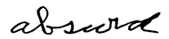

THE
BASIC PRINCIPLES OF
GREGG SHORTHAND
CHAPTER ONE
LONGHAND AS A BASIS OF SHORTHAND
I am persuaded that the true progress
of shorthand—the real solution of the difficulties surrounding
it—is to be found in an attentive study of our ordinary longhand
writing.
THOMAS ANDERSON,
in History of Shorthand (1882)
In reading some of the letters which were received
while I was on a trip to Australia, I found a very interesting paragraph
in a letter from Mr. John A. Bell of Glasgow.
As the paragraph in Mr. Bell’s letter
suggests an interesting topic, I am going to use it as a text, as
it were, for the first of a series of articles on the scientific
principles underlying the system. Mr. Bell writes:
In reading
over this month’s Magazine I could not but admire the beautifully
written page on the Fauna of the Alps. I remember when I was studying
architecture for an art certificate a number of years ago being
struck by a remark made by a writer who was comparing Greek and
Roman architecture. He said that the reason why Greek architecture
was more beautiful than Roman was that it was based on the ellipse,
which, on account of its variety, is impelling to the eye. Do you
see the point? That is the reason for the pleasure which a page
of Gregg gives if one has looked over several pages of Pitman.
It is needless
to say that, like Mr. Bell, every writer of the system finds delight
in the artistic beauty of its forms and in the easy, natural character
of the writing. These qualities are commented on again and again
in the letters we receive. But doubtless few writers have tried,
as Mr. Bell has done, to find definite reasons for either
the artistic qualities of the system or its easy-writing qualities.
As the derivation of them may be interesting
to our friends, I am going to discuss them in a series of articles.
In doing this I intend, first, to explain the general basic principles
of the system, and, second, to show how these fundamental principles
have been applied in the selection and arrangement of the alphabet.
It is necessary to have a clear understanding of the entire plan
of structure as a whole to appreciate the working out of the details.
I hope, therefore, that if you are interested in the subject, you
will read the explanation of each basic principle, and carefully
weigh its relative importance to the whole plan. If you do this
I believe you will find a new interest in the system, and be able
to give convincing reasons for the faith that is within you.
The Fundamental Difference. —
The fundamental difference between geometric
shorthand and Gregg Shorthand is this: Geometric shorthand is based
on the circle and its segments; Gregg is based on the ellipse,
or oval.
As geometric shorthand is based on the circle,
its characters are supposed to be drawn with geometric precision,
and are struck in all directions. The characters, being struck in
all directions, necessitate continual change in the position of
the hand while writing.
As Gregg Shorthand is based on the ellipse or
oval, it is written with a uniform slope, as in longhand. Its characters
are, therefore, familiar and natural to the hand, and like longhand
do not require a change in the position of the hand while writing.
When we say, “with a uniform slope as in longhand” we
do not mean any particular slope; we simply mean that whatever slope
is adopted the writing is uniform in slope—not zig-zag. This
is understood by all writers of the system, but I consider it advisable
to include the statement here, as an effort is being made to represent
us as insisting upon a particular slope.
Short-Writing or Short-Drawing?—Geometric
shorthand has been described as a rapid drawing of characters, while
Gregg Shorthand has been described as a rapid writing. That the
affinity of geometric shorthand to drawing is fully recognized by
the advocates of that style, will be clear from the following quotations.
Isaac Pitman, in the seventh edition of his
Manual said:
The student should be careful not to hold
the pen as for common writing, for this position of the hand is
adapted for the formation of letters constructed upon a totally
different principle from those of Phonography. The pen should
be held loosely in the hand, like a pencil for drawing,
with the nib turned in such a manner that the letter “b”
can be struck with ease.
In a series of articles on “Aids and
Hindrances to Shorthand Writing” in Pitman’s Shorthand
Weekly, Mr. Alfred Kingston said:
I have frequently noticed that the shorthand
student skilled in thawing always makes the best start upon the
shorthand alphabet. The student should be encouraged, therefore,
to treat the preliminary work of mastering the simple geometric
forms, and especially the curves, as something really in the
nature of a drawing lesson, and to draw them as carefully
and accurately as possible at the start.
Andrew J. Graham, author of the most successful
American modification of Pitman’s Shorthand, in the Introduction
to Part Two of his “Standard Phonography,” said:
The position given to the pen and hand in
backhand writing seems best adapted for the easy and graceful
formation of phonographic characters. The pen should be held very
loosely, so that the nib may be readily turned and suited to the
execution of characters made in various directions.
These quotations will prove that the geometric
style of shorthand is admitted to resemble a drawing — not
a writing — of characters.
Although they do not bear directly on the question
of the drawing or the writing of the characters, the views expressed
by very prominent Pitman reporters about ‘the comparative
facility of the back slope and forward slope characters may be of
interest at this point.
Mr. Henry M. Parkhurst, one of the most prominent
of the early pioneers of “Pitman’s Phonography,”
and the “Spelling Reform” in America, said:
The stroke for p [a back-slope character
in Pitman] cannot be struck with the same ease as ch
[a stroke like our j] because the muscles of the
fingers naturally move in the direction of the latter stroke,
and not in the direction of the former. The cords, muscles, etc.,
all strain from the inside of the limbs; and consequently all
those who use the right hand in writing can write with greater
rapidity and endure longer in writing from right to left than
they can in writing from left to right.
Mr. George R. Bishop, for many years an official
reporter of the New York Stock Exchange, and formerly President
of the New York State Stenographers’ Association, in discussing
the various shorthand characters, said:
The directions or slopes of some strokes
are quite different from any to which the fingers become accustomed
by writing ordinary longhand; the muscles therefore require to
be trained to these unfamiliar movements and directions by much
practice.
The famous reporter, David Wolfe Brown, for
many years one of the staff of official reporters of the House of
Representatives, Washington, in his book, “Mastery of Shorthand,”
which was published by the Phonographic Institute Company (publishers
of Benn Pitman Shorthand), declares:
Even in those rare cases where the phonographic
pupil shows by his ordinary penmanship not only an eye for truth
and beauty of form, but a real facility of hand, it is a facility
adapted exclusively to the peculiar forms and inclination of the
longhand characters; and there remains great need for special
manual discipline by reason of the variety of forms and directions
of the shorthand characters.
Mr. Brown expands this thought in his popular
book, “The Factors of Shorthand Speed”:
In the shorthand writer’s manual discipline
the first step is to get rid of certain habits often acquired
in longhand, and which, unless corrected, must make high
stenographic speed a physical impossibility. It may be desirable,
for a time at least, that longhand practice be as far as possible
suspended, so that a new set of manual habits may be the more
easily acquired.
One of the habits which shorthand writers
need especially to overcome arises from the peculiar slant of
the longhand characters. . . . As the shorthand characters are
written in almost every direction—probably more of them
with a backward inclination, or with a horizontal motion, than
with a forward slope—the hand and fingers, in being educated
for shorthand writing, must be emancipated from the fixed position
to which they have been accustomed in longhand.
From these extracts
it will be seen that, instead of previous experience and training
in the writing of longhand being regarded as an advantage to the
student of geometric shorthand, it is declared by these high authorities
to be an obstacle. To do good work in geometric shorthand the student
is told that he must “get rid of certain habits acquired in
longhand,” and his “hand and fingers must be emancipated
from the position to which they have been accustomed in longhand.”
The Logical Deduction. —
If what these eminent authors and reporters say is true—and
what advocate of Pitman Shorthand will challenge their statements?—then
the student or writer of a system founded on longhand, requiring
the same position of hand and fingers, and the same movements as
longhand, starts on the study with a tremendous initial advantage
over the student or writer of geometric shorthand.
“The planets move in elliptic orbits.”
We claim that the ellipse is a more scientific basis for a system
of brief writing than the circle.1
Our beautiful Roman writing is based on the ellipse, or oval, and
being the outcome of a process of evolution that has been going
on for centuries, it represents the “survival of the fittest”
in the movements and characters best adapted to the hand. As Benn
Pitman says in his “Life and Labors of Sir Isaac Pitman,”
our present writing is “but the culmination and fruition of
a series of experiments, changes and improvements which were commenced
in the very childhood of civilization, and which have been uninterruptedly
continued to the present time. From the earliest pictorial and hieroglyphic
symbols there has been an unending series of experiments and improvements,
and each step has been received with more or less of hesitancy and
distrust because of the inconvenience attending a change of habit.
. . . The simplest, most convenient, and most reasonable way of
doing anything is usually the last to come, but when the right thing
is accepted it seems amazing that the inferior and imperfect one
should have been tolerated, much less loved and tenaciously adhered
to.” [There is an almost prophetic ring about that last sentence!]
The Benefits Admitted. —If
if be true that the movements and characters used for longhand writing
have been adopted because they are easy and natural to the hand,
we believe that it does not require argument to prove that the same
easy, natural movements and characters are the logical basis of
a briefer style of writing. Indeed, nearly all authors and expert
writers of geometric shorthand have been willing to acknowledge
this, but have asserted that, on account of the limited shorthand
material, it was impossible to construct a practical system on such
a basis.
At the first International Shorthand Congress,
in 1887, Professor J. D. Everett, author of “Everett’s
Shorthand for General Use,” a geometric system, acknowledged
that, “to employ characters which slope all one way is advantageous
in so far as it enables the writer to make a given number of movements
in a given time.”
And Edwin Guest, the author of “Compendious
Shorthand,” a geometric system, in a discussion at one of
the meetings of The Shorthand Society, London, is reported to have
frankly admitted that, “if any script system could be written
with only double the number of strokes in a geometric system,
he was prepared to admit the advantage was in favor of the script
system.”
In 1888 Mr. Thomas Allen Reed, the most famous
of all the English champions of Pitman’s Shorthand, in referring
to some shorthand notes which had been contrasted as to brevity,
with longhand, at one of the meetings of The Shorthand Society,
London, is reported to have said that he thought “Dr. Gower
had overlooked one point—the advantage of the one slope”
in the longhand specimen.
The Reporters’ Journal (England),
January, 1891, in giving reasons for objecting to the suggested
substitution of the downward (backslope) r for the upward
r before m (a suggestion which has since been adopted by
Isaac Pit-man & Sons) said:
We are, nevertheless, as firmly convinced
as ever that the upward r is struck, either alone or
in combination, very much easier and with greater facility than
its downward companion.
The very act of having to draw the pen backward
tells against the downward r, and surely phonographers
can quickly ascertain for themselves the more advantageous outline
by writing each for the same space of time.
A Convincing Demonstration.
— In a paper on “The True Theory of Shorthand,”
read before the Shorthand Society, London, Mr. Thomas Anderson,
author of the “History of Shorthand,” stated the absurdity
of zig-zag writing very effectively:
I am not now raising the question whether
writing on the slope from right to left, or writing perpendicularly,
or nearly so, or, again, writing on the back slope, is the quicker
or quickest method of writing. I say I do not now raise that question.
I give no opinion on it—nor am I concerned what may be the
decision regarding it.
But this I do earnestly and strenuously maintain,
that the attempt to write in these three different directions
at one and the same time is absurd. Just take the word absurd

as an example It is a good word for the purpose. Now if I am
to write the “a” on the common slope, the “b”
on the back slope, and the “a” straight up and down,
and follow any other variety of the same changes with the other
letters of the word, namely, “u,” “r,”
“d,” then I make bold to say that the word and the
thing signified are both demonstrated in the same form—a
form with which you offend the eye, as well as threaten dislocation
to the hand.
It is idle to answer that the habit is followed
by thousands of shorthand writers without much difficulty, or
it may be said even with ease. Granted. What then? The praise
is to the hand, which, as Aristotle has well said, is “the
instrument of instruments.” We are not, however, entitled
on that account to visit it with an unnecessary infliction.
I may, in concluding my observations under
this head, allude to the fact that an inspection of any paleographical
folios will show, on a comparison of the ruder forms of writing
with the more modern in almost all languages, a tendency to have
the characters all on the one slope. The fact is interesting rather
than here important, but if anyone cares to turn over the princely
tomes of Silvester in his “Paleographique Universelle,”
he will perceive this to be very noticeable.
The famous journalist, editor, author, and
Member of Parliament, Mr. T. P. O’Connor, in writing on the
subject of shorthand in the Weekly Sun, London, said:
I am not an entire believer in the Pitman
system of shorthand; but as I began with it I never tried to change.
. .I have known very few Pitman writers whose notes could be read
by anybody else, and I have known a great many—including
myself—who found it very difficult to read their own notes.
It strikes me now, that the system is best
which can be made most like the ordinary longhand. Obviously the
same muscles, the same nerves, the same attitudes, all that conglomeration
of causes, open and latent, which provide the peculiarities of
one’s longhand will be employed in producing the shorthand.
In other words one will write his shorthand as he does his longhand.
Put Into Figures. —
In an article on “The ‘One Slope’ Theory in Shorthand,”
Mr. G. C. Mares stated the practical advantages obtained from uniformity
of slope in a very convincing way:
It will be evident to the vast majority of
shorthand writers that in Pitman Shorthand many words can be written
much faster than others, even though the number of pen strokes
and ineffective movements (lifts) are the same. Thus the word
cherry can be written faster than pity, reject
is more facile than shave, although it has an additional
stroke, and the same may be said of hundreds of other words. What
causes the difference in facility? The answer is that cherry,
reject, are written on the “one slope,” whilst
pity,2 shave,
employ back strokes. At the commencement, then, we see that an
advantage exists in favor of one-slope writing; but no one has
yet, I believe, shown the existence of this advantage. I will,
therefore, invite attention to the following figures:
(a) A rapid penman can write 30 words a minute;
each word containing on an average of 16 movements—16 ×
30 equals 480 longhand strokes a minute.
(b) The limit of the power of the hand to
form shorthand strokes, is, at the outside figure, 300
a minute; 300 to 480 shows 60 per cent in favor of longhand
strokes.
(c) As the formation of shorthand strokes
requires more care than longhand, on account of the necessary
observance of length, thickness, etc., an allowance of, say 25
per cent must be made, and this, with an allowance of 10 per cent
for loss of brevity (if any) as compared with other systems, will
leave us 25 per cent advantage in the matter of facility of execution
gained by the use of one-sloped or longhand signs or strokes.
. .
All Natural Writing Elliptical.
— It has been said that it is impossible for the human hand
to make a perfect circle in rapid writing. On the other
hand, elliptic figures are natural and easy to the hand; indeed,
the making of an ellipse or oval is one of the first exercises given
a child in learning ordinary writing. As a writer on the subject
has said:
No alphabet on the radii of the circle with
its various arcs can be easy to write. The circle is the most
difficult of all simple forms. It is astonishing that modem inventors
of shorthand should have overlooked the experience of all nations
in the writing of longhand, and therefore, it is clear that the
efforts to secure speed have developed the forms employed away
from the circle into arcs and axes of the inclined ellipse. No
hand at rest can rapidly execute the circle, while all easy movements
of the arm, hand and fingers resting on the paper form the lines
of the ellipses. Is it not remarkable that after having based
the alphabet on the circle Pitman should say in the “Reporters’
Companion,” “Theoretically, every line employed in
phonography is a light line or an arc of some circle. Practically
all light lines become to fluent writers portions of ellipses.
The most continuous line that can be described is the flattened
ellipse. The greater the velocity, the flatter the arc.”
The older script, cursive, graphic, scripthand,
or pasigraphic systems — as they are variously termed —
claimed to be “founded on longhand.” That claim was
based on the fact that they rejected vertical and back-slope characters,
and were written with a “uniform slope.” The title page
of one of the first of these systems, that of Richard Roe, published
in 1802, described it as “A new system of Shorthand in which
legibility and brevity are secured upon the most natural principles,
especially by the singular property of their sloping all one
way according to the habitual motion of the hand in common
writing.” This is the claim of all the systems on that basis
— there is little change in the wording.
While uniformity of slope is very important,
it is but one of the virtues of longhand writing, and it is a question
whether or not it is the most important one. Let us consider some
of the other qualities of longhand.
Other Longhand Features. —
In longhand writing there is no compulsory shading or thickening
of the characters.
Prior to the appearance of Gregg Shorthand nearly
all the systems claiming to be “founded on longhand”
had shading or thickening of the characters. Some, indeed, had shaded
upward characters, and shaded horizontal characters — even
shaded small circles and shaded hooks! If we accept longhand as
our model — if we are absolutely sincere about it —
we are bound to acknowledge that freedom from compulsory shading
is just as important as is the uniform slope.
In longhand writing the words are not placed
in several positions with relation to the line of writing.
Prior to the appearance of Gregg Shorthand,
many of the systems said to be “founded on longhand”
had words placed in three or more positions — on the line,
above the line, and through or below the line. Here, again, if we
accept longhand as our model, we are bound to acknowledge that the
use of several different “ positions” for distinguishing
words is not admissible.
In longhand writing all the letters, vowels,
and consonants are joined.
But some of the systems claiming to be “founded
on longhand” (notably “Sonography,” by Rev. D.
S. Davies, and “English Script Shorthand,” by John Westby-Gibson)
expressed the vowels by disjoined signs after the consonantal skeleton
of the word was completed.
There are other features in many of the systems
said to be “based on longhand” prior to the publication
of Gregg Shorthand, which were inconsistent with that claim. Among
these may be mentioned the presence of many obtuse angles, which
do not occur in longhand. I intend to speak of these things later.
A Process of Evolution. —
I should be sorry if you gained the impression from what I have
said that I am attempting to disparage previous endeavors at the
construction of a system on natural lines. This is not the case.
I am simply explaining certain fundamental differences between the
structure of our system and the systems that preceded it.
The following quotation from the “Story
of Gregg Shorthand,” as told at the Silver Jubilee meetings
(and afterwards published in pamphlet form) will show that I have
always been ready to pay a tribute to preceding authors:
I regard that alphabet as a natural evolution
of the best principles of all systems mentioned. In its making,
therefore, credit is due to the great shorthand authors of the
past, whose genius cleared the path for progress. The chief distinction
I claim for Gregg Shorthand is that while other systems embody
one or more natural principles— such as absence of shading
or position of writing, or uniform slant, or lineal, continuous
movement, or connective vowels—Gregg Shorthand is the only
system embodying all these natural features. And it is the only
system, I venture to say, that satisfies the eye with the freedom
and gracefulness of its forms.
In the course of this series of articles I
hope to make it clear that there has been a gradual evolution toward
a system that would be “the distilled essence of our common
writing.”
I have often heard advocates of Pitmanic Shorthand
dispose of other systems with a contemptuous expression, and then
mention several systems that were once fairly wellknown, but have
now declined in popularity, as proof of the superiority of Pitman.
That is very superficial reasoning. It is on a par with the shortsightedness
of the people who ridiculed the early inventors of the aeroplane
because their first air flights were not entirely successful.
To the thoughtful investigator even the partial success
of systems founded on principles entirely different from those of
Pitman has great significance. It would be easy to demonstrate that
each of these systems succeeded in almost exact proportion to the
degree in which it contained natural writing features,
and failed to attain greater success because it retained or extended
the use of certain unnatural writing features. In some
instances these systems, while incorporating one or two longhand
features, pushed the use of principles or expedients opposed to
longhand to a much greater extreme than is done in the Pitman system.
A Prediction Fulfilled. —
Mr. Thomas Anderson, who was for many years a reporter in the Law
Courts of Glasgow (using the Pitman system), and who wrote a very
valuable and scholarly “History of Shorthand,” expressed
this opinion:
To make shorthand what it ought to be, it
must follow the track of the longhand writing, be all written
on the one slope, and make no difference between thin and thick
strokes, while describing accurately the vowels. . .
I believe that such a system would, in the
course of a few years effect a comparatively universal change,
by the side of which the results attained by the Pitman plan in
the course of the last fifty years would look anything but magnificent.
Considering the date at which it was written—1882—this
was a remarkable prediction.
One of the beliefs of shorthand inventors and
of others who are enthusiastic about the benefits to be derived
from the widespread study and practice of shorthand, is that it
will eventually take the place of longhand to a very large extent.
That belief is a very reasonable one.
For many years there was printed on the covers
of Isaac Pitman’s books the following extract from an article
which appeared in the English Review:
“Who that is much in the habit of writing
has not often wished for some means of expressing by two or three
dashes of the pen that which, as things are, it requires such an
expenditure of time and labor to commit to paper? Our present mode
of communication must be felt to be cumbersome in the last degree;
unworthy of these days of invention. We require some means of bringing
the operations of the mind, and of the hand, into closer correspondence.”
If that was true fifty years ago, it is even
more true of conditions today. There is an ever-increasing pressure,
and it does seem absurd that we should be obliged to continue to
employ the cumbrous forms of longhand when a briefer method is at
our disposal. Articles have been published demonstrating that millions
of hours a day could be saved by the general use of shorthand in
correspondence and in making notations. But it has been recognized
as a fact—an extraordinary and inexplicable fact—that
many of those who know shorthand are not inclined to use it in their
literary and other work. It has been noted also that writers of
our system are much more inclined to use shorthand in this way than
are the writers of the older styles. In our own offices, for instance,
nearly all the managers of departments jot down in shorthand the
answers to letters on the back of the letters, and hand them to
the stenographers instead of dictating, and this plan is followed
in much of the correspondence between offices and in the composition
of articles, advertisements, etc. Even the reports of our travelling
representatives are made in shorthand—the original report
in shorthand being sent to the manager of the local office, and
a carbon copy sent to the General Sales Manager in the Executive
Department.
Shorthand for Personal Use.
— Speaking offhand one would say that the mental attitude
which induces such a large percentage of writers of our system to
use shorthand more freely and confidently as a personal time-saving
instrument, as compared with the small percentage of writers of
the older systems who do so, is due to the greater legibility of
our system on account of the insertion of vowels, the absence of
shading, and position writing—all of which make the writing
more easy and natural. All these things contribute a good deal,
because they create confidence and relieve the mind of much conscious
effort; but there is another reason, which is probably more important
still. It will be found in an article by a distinguished shorthand
reporter who was also an author of distinction.
Some years ago the Phonographic World
published a series of articles on“How Authors Write,”
and the late Philander Deming, who was an author of distinction
as well as a shorthand reporter, said:
With slight exceptions, my literary work
has been done with the pen. . . . This is done without any rule
and without thought about it. But the strong tendency is,
when I am most intent upon my work, to use only longhand forms.
I suppose this is because the longhand is made up by the repetition
of so small a number of radical elements. You will call to mind
the fact that the Spencerian analysis and system of penmanship
shows us that the working letters (the small letters) of our common
writing are formed of only four radical elements. These four elements
form the entire alphabet. The result of this formation is that,
while it requires considerable muscular action to write longhand,
the work of writing calls for very little attention on the part
of the mind of the writer.
Phonography is based upon twelve radical elements.
The writing, therefore, is not a continual choice from among four
elements, but from among twelve, and this rapid choosing among
so many is difficult and the work is complex. Hence. the writer
has to give his attention to the form in writing them, and this
continues to be true, however extensive his experience in writing
phonography may have been. The moment a writer becomes deeply
interested in his subject he forgets to write shorthand; his pen
glides unconsciously into the longhand forms. It will be remembered
that Charles Dickens was a shorthand writer. He reported the debates
in Parliament, and he has described his struggles in learning
shorthand in a well-known and often-quoted story—and yet
all his literary work was done in longhand writing.
To the thoughtful reader this quotation may have
a great deal of significance. It represents a phase of this subject
which is seldom given any consideration. In using our system there
is greater mental freedom than there is in writing geometric
shorthand, because, like longhand, the writing in our system consists
of a few familiar elements.
In the next chapter I shall discuss what I believe
to be the most important element of either longhand or shorthand
writing. It is not longhand slope, connective vowels, absence of
shading, or the elimination of position writing. It is seldom mentioned,
but it is, nevertheless, the greatest feature of the system —
the one which, above all others, distinguishes it from all other
systems. Can you guess what it is?
1 Mr. William
A. Crane, author of “Crane’s Script Shorthand”
(1884), declared that “all graceful motion is elliptical.”
2 The obtuse
angle in pity is partly responsible for the slowness with
which the outline is written.
- Chapter Two - |